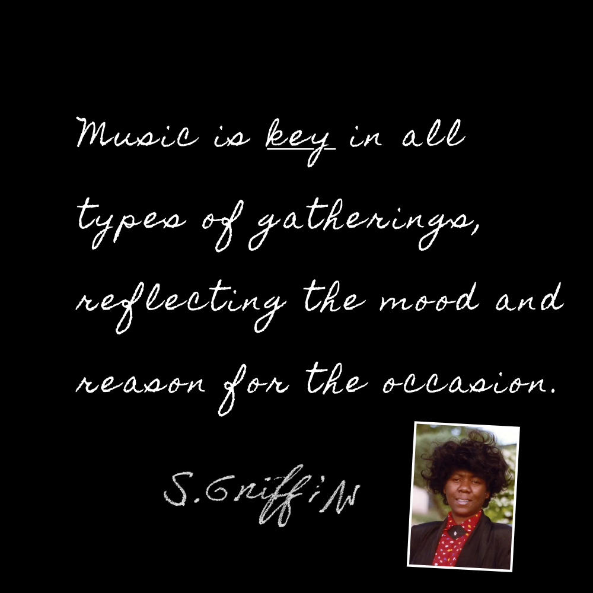

Mixtapes & Memory
The Sounds of Black Albuquerque 85-88
Shirley Ann Griffin (a University of New Mexico student) lovingly documented the sounds, songs and speeches that you would have heard at African American gatherings in Albuquerque during the 1980s.